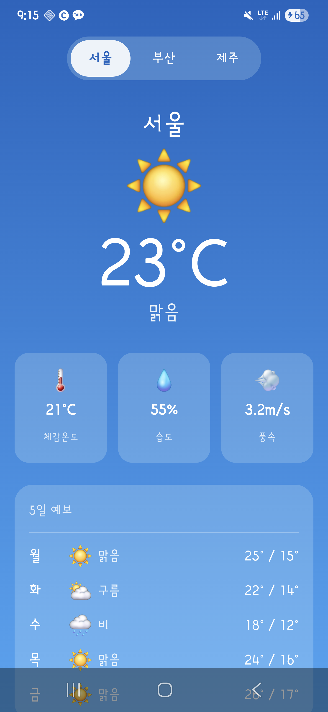
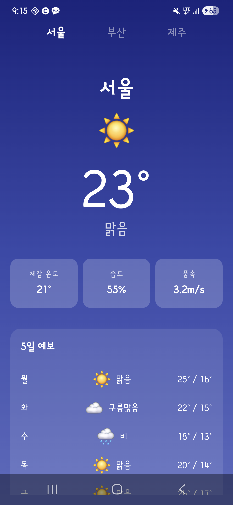

동일한 Android 날씨 앱 요구사항을 세 AI CLI에 전달해 처음부터 앱을 생성하게 한 결과입니다.
동일한 Android 날씨 앱 요구사항을 세 AI CLI에 전달해 처음부터 앱을 생성하게 한 결과입니다.
| 항목 | Claude | Codex | Gemini |
|---|---|---|---|
| 모델 | claude-sonnet-4-6 (Claude Code CLI v2.1.152) | gpt-5.5 (OpenAI Codex CLI v0.134.0) | gemini-3-flash-preview + gemini-3.1-flash-lite (Gemini CLI v0.43.0) |
| 소요 시간 | 537초 | - | 318초 |
| 총 사용 토큰 | 918,278 | 165,761 | 672,522 |
| Kotlin 파일/라인 | 5개 / 395줄 | 6개 / 451줄 | 5개 / 304줄 |
| 빌드 | 성공 | 성공 | 성공 |
| 스크린샷 | 확보 | 확보 | 확보 |
| UI 테마 | 라이트 — 하늘색 그라데이션 | 다크 — 네이비 계열 | 라이트 — 인디고/보라 그라데이션 |
| 한국어 표시 | 정상 | 깨짐 (stdin 파이프 시 한국어 인코딩 손실) | 정상 |
Claude는 프롬프트 캐싱을 사용. cacheRead 토큰은 일반 입력 대비 약 10배 저렴하게 과금됨
Codex CLI는 입력/출력 분리 없이 총 사용 토큰만 표시
기존 프로젝트에서 재측정. 출력 토큰(3,521)은 실제 초기 생성 시보다 적을 수 있음. 2개 모델 동시 사용 (라우터 + 메인)


| AI | UI 테마 | 주요 기능 | 관찰 |
|---|---|---|---|
| Claude | 라이트 — 하늘색 그라데이션 | 동적 배경 (날씨별 색상 변경), 카드 3개 (체감/습도/풍속), 5일 예보 리스트 | gradlew 파일 미생성 (수동 보완 필요) |
| Codex | 다크 — 네이비 계열 | WeatherNow 헤더 표시, Feels like 표시, 5일 예보 | 생성 완료 후 자동으로 gradlew assembleDebug 실행하여 APK 생성 |
| Gemini | 라이트 — 인디고/보라 그라데이션 | 심플한 레이아웃, 카드형 상세 정보, 5일 예보 | 빌드 확인은 했으나 mipmap 리소스 누락으로 수동 보완 필요 |
| AI | Kotlin 파일 | Kotlin 라인 | 변경 파일 |
|---|---|---|---|
| Claude | 5개 | 395줄 | - |
| Codex | 6개 | 451줄 | - |
| Gemini | 5개 | 304줄 | - |